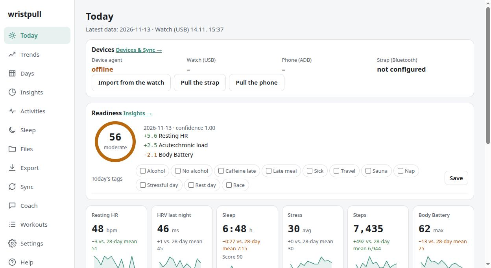
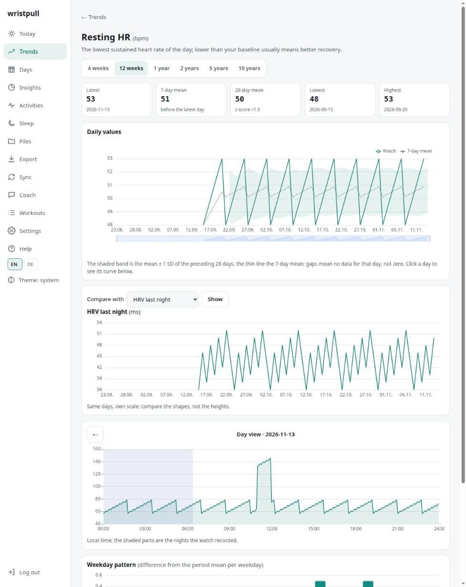
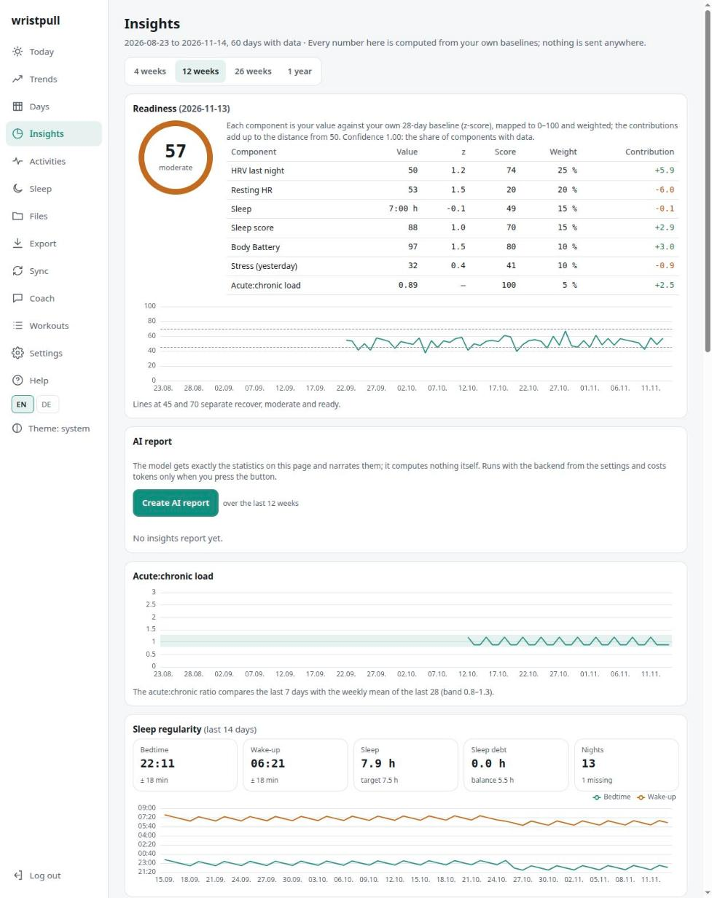
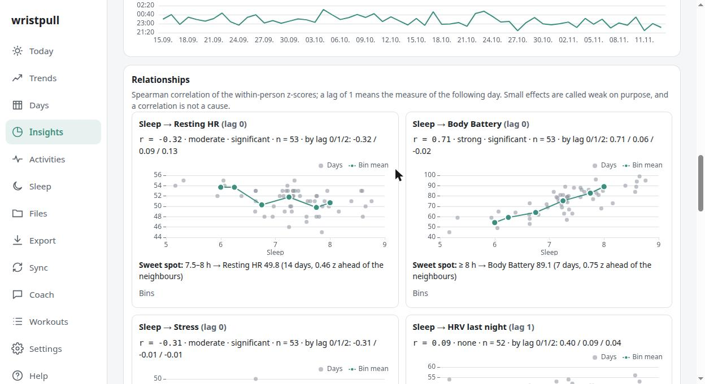
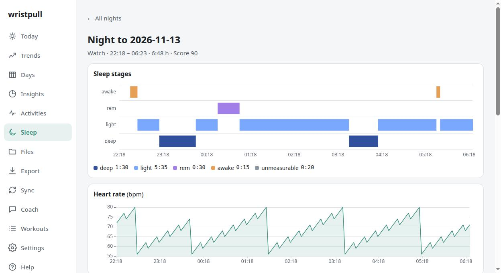
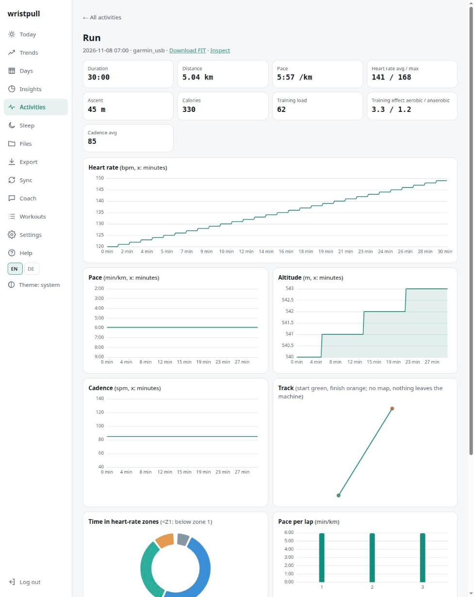

What it can do
wristpull collects your data, shows it to you, helps you understand it, turns it into training — and makes sure you keep it forever. Everything below ships today, runs every morning on real hardware, and since November 2026 every bit of it works from the browser, no terminal required.
Honest limits
The coach refuses diagnoses and points you to a doctor when values look off. Treat it as a training partner with a good memory, not a clinician.
Daily drivers are a Garmin fēnix 6X Pro and an Amazfit Helio Strap, cross-checked value by value. Other Garmin watches and Gadgetbridge-supported bands should work; some need small parser additions — that's what the issues tab is for.
A Garmin watch deletes monitoring files once any app has fetched them. If the vendor app syncs first, those hours are gone for everyone else. wristpull documents the order that keeps your archive complete.
The dashboard
Rendered from synthetic test data — no real heartbeat has ever been in the repository or on this site.






The screenshots and charts on this site are rendered from synthetic test data — real health data never leaves the machines it belongs to, not even ours.